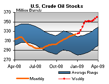

Released on April 1, 2009
(Next Release on April 8, 2009)
($) 123?
With the U.S. average retail price for regular gasoline now above the $2 per gallon mark, many Americans may be wondering if even higher gasoline prices await this summer. Does the surge over $2 per gallon signal a re-run to the $3 level or higher this summer, adding to the budgetary strain already experienced by average consumers?
Although future market conditions are highly uncertain, EIA does not see gasoline prices climbing to such levels this year. It does seem likely, however, that gasoline prices will average more than $2 per gallon this summer. On average, prices of crude oils used by U.S. refiners have risen by about $17 per barrel, which translates to about 42 cents per gallon. As such, higher crude oil costs account for most of the increase in retail gasoline prices seen over this period. Production cuts from OPEC are one factor strengthening crude oil markets, but steadying gasoline demand may also be bolstering both crude oil and gasoline prices.
As indicated in the figure below, the year-over-year decline in gasoline demand experienced at the outset of 2008 deepened steadily throughout the summer, bottoming in September under the weight of very high gasoline prices, eroding economic activity, and hurricane related disruptions. Some recovery in gasoline demand is now evident, given newly published monthly data for January 2009, which showed that the decline rate had shrunk to 1.4 percent from the 4 6 percent rates seen last summer prior to Septembers exaggerated drop. While the monthly January 2009 data again revised downward gasoline demand initially estimated from weekly data, the monthly figures showed a smaller decline than the 2.5 percent rate based on weekly data.
The figure below also makes clear that gasoline demand continued to strengthen in February and March, no matter how EIA weekly data are used to estimate growth. Focusing on the most recent data, the 4-week average ending March 27, 2009 stood at 9.038 million barrels per day, just 0.2 percent lower than gasoline demand (product supplied) derived from monthly data for the corresponding 4-week period last year. (See Table 1 of the latest Weekly Petroleum Status Report - WPSR). If one compares the current 4-week average to weekly data for the same period last year, gasoline demand this year is 1.4 percent lower than in 2008. Regardless of the method chosen, gasoline demand has essentially flattened relative to year-ago levels and looks likely to remain flat or grow modestly over the summer, as long as retail prices remain as low relative to year-ago levels as they currently are and the economy does not worsen.
Gasoline refining margins, the difference between what a refiner pays for crude oil and the price at which the refiner can sell its gasoline, dropped to very low levels earlier this winter. This, combined with maintenance activities, especially for gasoline-producing fluid catalytic converters, prompted refiners to cut capacity utilization rates to an average of less than 83 percent year-to-date, almost 5 percentage points below the five-year average rate for this period. Lower operating rates have combined with steadying demand to pressure gasoline crack spreads upward from their earlier lows and to keep gasoline inventories fairly low they are five percent lower than at this time last year. While rising crude prices and gasoline margins are the primary drivers behind the seasonal increase in retail prices seen to date, further increases appear limited by substantial surplus refining capacity in the U.S. and Europe. With distillate fuel margins falling from extremely high levels during 2008, higher gasoline margins may encourage refiners exiting maintenance to shift product yields towards gasoline production, bolstering supply and thereby capping supply-side pressures on retail prices.
In summary, the bottoming of the gasoline market in early winter, with very low or even negative margins between gasoline and crude oil prices, led refiners to bring forward maintenance activity and cut their operating rates to minimize surplus inventories. At the same time, those prices were low enough to generate a rebound in demand, even as the economy struggled. Along with rising crude prices, the tighter balance between supply and demand in the gasoline market brought retail gasoline prices from the mid $1.60s to above $2 per gallon. Retail gasoline prices approaching $3 per gallon, however, are probably not reachable, let alone sustainable, this summer due to continuing surplus refining capacity and the continuing effect of the economic downturn on fuel demand. Furthermore, with over 4 million barrels per day of excess crude oil production capacity, any surge in demand on a recovering economy could be met by increased production, mainly from OPEC countries. So, while gasoline consumers may be irked at paying over $2 per gallon for much of this summer, it doesnt look like 2009 will produce a spike in prices that comes anywhere close to what occurred last summer.
Gasoline Price Climbs Above $2 per Gallon and Diesel Prices Surge
The national average price for regular continued last weeks increase at an accelerated rate. Vaulting past $2 a gallon for the first time since November 17, 2008, the price rose 8.4 cents to 204.6 cents per gallon. Nonetheless, the price remained 124.4 cents below the price a year ago. Prices increased in all regions of the country and moved past the $2 mark for the first time since last year in both the East Coast and the Midwest. On the East Coast, the price jumped 8.6 cents to 202.5 cents per gallon. In the Midwest, the average shot up 8.2 cents to 203.1 cents per gallon. While the 9.3 cent increase in the average price on the Gulf Coast was the largest among the major regions, the price remained below $2 a gallon at 196.9 cents per gallon. In the Rocky Mountains, the price rose 7.3 cents to 193.7 cents per gallon, remaining the lowest price in the country. The price on the West Coast rose 7.6 cents to 220.7 cents per gallon. The price hike in California was 9.4 cents, bringing the price there to 224.8 cents per gallon.
The national average price of diesel fuel rose dramatically, surging 13.1 cents to 222.1 cents per gallon. This was the largest increase in price since May 26 of last year. However, despite the increase, the price was 174.3 cents below the price a year ago. Prices rose throughout the country, shooting up by more than 10 cents in all five principal regions. On the East Coast, the price rose 11.5 cents to 228.1 cents per gallon. The price in the Midwest shot up 13.8 cents, to 217.6 cents per gallon. For the second week in a row, the largest increase took place in the Gulf Coast, where the price surged 14.3 cents to 220.3 cents per gallon. Despite an increase of 11 cents, the price in the Rocky Mountains, at 214.6 cents per gallon, remained the lowest among the regions. The price on the West Coast jumped to 228.2 cents per gallon, up 13.2 cents. The average price in California surged 16.8 cents to 229.7 cents per gallon.
Propane Inventories Post Season Build
For the second consecutive week, total propane inventories continued their post season build that measured 0.7 million barrels, pushing inventories up to an estimated 38.4 million barrels as of March 27, 2009. Despite lingering winter weather in some parts of the Nation, the overall direction for propane inventories at this time appears to favor the start of the next build season. Regional inventories reported gains last week with East Coast inventories up by 0.2 million barrels, while the Midwest showed a gain of 0.3 million barrels during this same time. Inventories in the Gulf Coast also moved higher last week, up by 0.2 million barrels, but the combined Rocky Mountain/West Coast region remained relative flat. Propylene non-fuel use inventories also remained relatively unchanged last week but its share to total propane/propylene moved lower and accounted for 7.4 percent, compared with the prior weeks share of 7.6 percent.
Text from the previous editions of This Week In Petroleum is now accessible through a link at the top right-hand corner of this page.
| Retail Prices (Cents Per Gallon) | |||||||
| Retail Data | Changes From | Retail Data | Changes From | ||||
| 03/30/09 | Week | Year | 03/30/09 | Week | Year | ||
| Gasoline | 204.6 | Diesel Fuel | 222.1 | ||||
| Spot Prices (Cents Per Gallon*) | |||||||||||||||||||||||||||||||||||
|
|||||||||||||||||||||||||||||||||||
| *Note: Crude Oil WTI Price in Dollars per Barrel. | |||||||||||||||||||||||||||||||||||
| Stocks (Million Barrels) | |||||||
|  | |||||||
| Stocks Data | Changes From | Stocks Data | Changes From | ||||
| 03/27/09 | Week | Year | 03/27/09 | Week | Year | ||
| Crude Oil | 359.4 | Distillate | 144.2 | ||||
| Gasoline | 216.8 | Propane | 38.416 | ||||